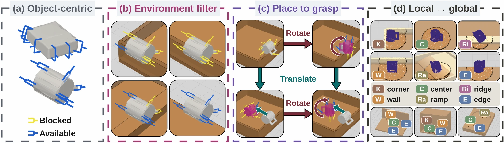
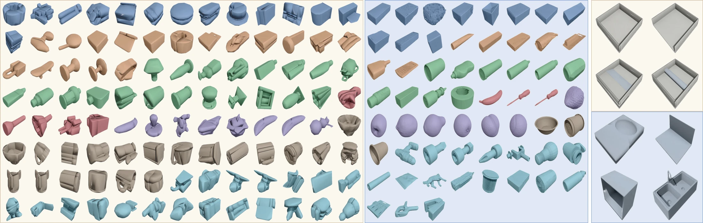
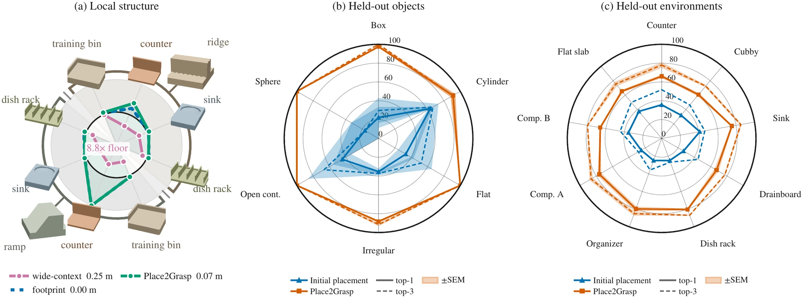

Grasping an object sometimes requires moving it to a different pose to make it easier to grasp. Such grasp-improving placement subgoals depend on both the object and the surrounding environment. Implicit methods learn grasp-improving behaviors through task-specific rewards rather than explicitly modeling graspability. Explicit methods model graspability directly, but those without environment conditioning cannot account for grasps blocked by surrounding geometry, and others incorporate the environment but restrict placement reasoning to a subset of SE(3), leaving potentially useful placements unexplored.
We present Place2Grasp, an equivariant generative model that reasons about grasp-improving placement subgoals over full SE(3) by conditioning jointly on the object and local environment geometry. Applied across local scene regions, the model forms an environment-conditioned graspability field whose candidate subgoals transform with the local structure. We introduce the Object–Pose Benchmark and the Scene–Geometry Benchmark and evaluate Place2Grasp on both.
Across both benchmarks, it improves grasp success over direct grasping at the initial pose by an average of 29.2 percentage points, and over other pre-grasp baselines by an average of 14.5 percentage points. Conditioning on local geometry also enables transfer to nine unseen environments, where direct-placement evaluation improves grasp success over the initial placement by 39.3 percentage points. Finally, in sim-to-real transfer, Place2Grasp succeeds in 48 of 50 trials across five objects, starting from placements where no collision-free grasp candidates were found.
Simulation-trained, deployed on a real robot
The simulation-trained model is deployed without real-world fine-tuning in a physical bin with three enclosed sides and one open edge. Five everyday objects, ten varied initial placements each, chosen so that the grasp generator finds no collision-free grasp candidates. A trial succeeds when the system moves the object to its selected placement subgoal and then grasps and lifts it.
| Object | Box | Tape | Bottle | Stapler | Spoon |
|---|---|---|---|---|---|
| Success | 8/10 | 10/10 | 10/10 | 10/10 | 10/10 |
Recorded runs
Ten runs per object, played in step: each run's push, return to the start pose and grasp are stretched to a common length, so the clips are sped up and not real time. A red ✕ marks the two failed box runs.
Simulation rollouts
Single attempt from a hard starting placement: reorient, then grasp, lift, carry and roll the wrist. The green ghost marks the selected placement. On the training scenes, grasping directly at the start pose (red, ✕ once it fails) is shown next to Place2Grasp (blue) with the same grasp module. Clips in a group play in step and are sped up.
An environment-conditioned graspability field

Local placement candidates, scene-wide subgoal selection
Objects and environments
3.66M scored grasps across 316 DexGraspNet meshes, 253,836 labeled placements, and 562,627 low-to-high-graspability placement pairs: 205,652 reconfiguration pairs and 356,975 feature-transfer pairs.

Held rate on the Object–Pose and Scene–Geometry benchmarks
Object–Pose Benchmark: 113 objects from seven shape families at their ten lowest-graspability initial poses in a closed bin. Scene–Geometry Benchmark: 56 objects from three low-graspability initial poses across four environments (a closed bin and bins with an open edge, a ramp or a ridge). A trial succeeds if the object stays held through a 12 cm lift, transfer and wrist roll. Mean over three seeds, ± SEM where shown; highlighted entries are best within SEM.
| Object–Pose Benchmark | Scene–Geometry Benchmark | ||||||||||||
|---|---|---|---|---|---|---|---|---|---|---|---|---|---|
| Method | Box | Cyl. | Rod | Flat | Irreg. | Open | Sph. | Overall | Bin | Edge | Ramp | Ridge | Overall |
| GG (direct grasp) | .471 ±.047 | .493 ±.013 | .638 ±.013 | .552 ±.043 | .638 ±.018 | .683 ±.010 | .547 ±.015 | .573 ±.013 | .383 ±.004 | .556 ±.016 | .577 ±.021 | .407 ±.012 | .481 ±.003 |
| GOMP | .710 ±.020 | .872 ±.009 | .867 ±.017 | .922 ±.002 | .903 ±.007 | .852 ±.010 | .893 ±.018 | .861 ±.006 | .409 ±.009 | .571 ±.012 | .552 ±.007 | .448 ±.014 | .495 ±.006 |
| OmniReset | .479 ±.018 | .800 ±.003 | .771 ±.014 | .748 ±.003 | .813 ±.004 | .783 ±.012 | .887 ±.009 | .751 ±.004 | .377 ±.009 | .589 ±.021 | .565 ±.000 | .444 ±.015 | .494 ±.006 |
| PreAfford-Or | .665 ±.014 | .800 ±.003 | .829 ±.014 | .763 ±.017 | .815 ±.005 | .867 ±.009 | .927 ±.009 | .802 ±.004 | .562 ±.015 | .688 ±.004 | .714 ±.016 | .599 ±.005 | .641 ±.007 |
| Place2Grasp (ours) | .800 ±.019 | .900 ±.008 | .962 ±.013 | .893 ±.012 | .927 ±.011 | .895 ±.013 | .890 ±.015 | .891 ±.003 | .833 ±.021 | .827 ±.009 | .712 ±.012 | .609 ±.037 | .746 ±.006 |
GG grasps directly without pre-grasp manipulation. GOMP learns a manipulation policy using object-centric graspability; OmniReset learns an end-to-end reorientation policy; both are retrained on our training objects and environments. PreAfford-Or samples 32 collision-free horizontal pushes, executes them as ideal forces and keeps the placement with the highest graspability. All methods use the same final grasp module (GraspGen), executing the highest-scoring reachable, collision-free grasp once.
Local conditioning preserves predictions, and selected subgoals transfer to unseen objects and environments

@article{anonymous2026place2grasp,
title = {Place2Grasp: Equivariant Local Graspability Fields for
Generalizable Scene-Wide Object Placement},
author = {Anonymous},
journal = {Under review},
year = {2026}
}